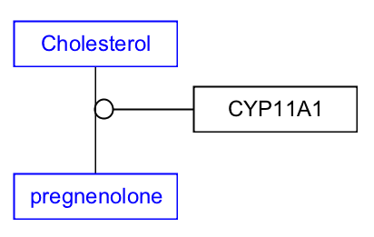
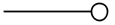

Background
Catalysis is the conversion of one entity (metabolite or protein) into another, aided by a catalyst, or enzyme. A catalysis reaction involves a change in the chemical structure of a metabolite, small molecule or protein. Catalysis reactions are drawn as two data nodes (metabolites, small molecules or proteins), a third data node (enzyme) and a mim-catalysis interaction, pointing from the enzyme to an anchor on a conversion line between the subtrate and the product.
Your Mission
Draw the catalysis reaction depicted in this figure:
This reaction is described in many publications. For our example, we will use the publication from Strushkevich et al. which includes the following sentence:
"The first step in steroid hormone biosynthesis is the conversion of cholesterol to pregnenolone and isocaproic aldehyde by mitochondrial CYP11A1."When translating this sentence to a reaction in a pathway model, the corresponding entities and interactions that we extract are:
- Cholesterol: Metabolite Data Node. This is the start of the reaction.
- CYP11A1: GeneProduct Data Node.
- Pregnenolone: Metabolite Data Node. This is the end of the reaction.
- mim-conversion: The interaction connecting the Cholesterol Data Node to the Pregnenolone Data Node.
- mim-catalysis: The interaction connecting the GeneProduct Data Node to the conversion interaction.
- Download the starter pathway here: draw-catalysis-start.gpml. This starter pathway already contains the metabolite Data Nodes, and the conversion interaction between them.
- Launch PathVisio and open the dowloaded file via File > Open.
- Select GeneProduct from the Data Node palette in the Objects tab.
- Click on the canvas to place the node.
- Double-click on the node to open its properties.
- Search for “CYP11A1”; Choose any of the entries that just say “CYP11A1”; Click OK to select the identifier, and then click OK again to close the node properties window.
- Select the mim-catalysis arrow from the MIM interactions palette in the Objects tab: 
- Drag and drop anywhere on the canvas to create the interaction.
- Drag the plain end (start) of the interaction over a target area on the enzyme node.
- Drag the catalysis end (end) of the interaction over the anchor (small dot) on the conversion line. In order to add an anchor to any interaction, select the interaction, and then right-cick and select Add anchor.
- (Optional) Align nodes using toolbar actions.
- Done!
- Save your work as a GPML file under File > Save As.
- Drag-and-drop the GPML file below to check if it is correct.